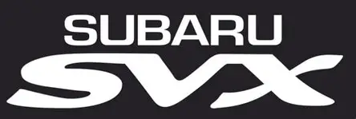
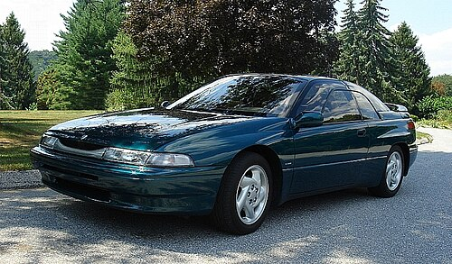
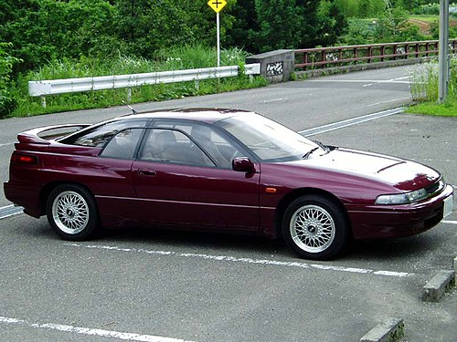

Back to main



Subaru Alcyone SVX (также известный за пределами Японии как Subaru SVX) — среднеразмерное GT купе, выпускавшееся компанией Subaru с 1991 по 1997 год. Название Alcyone произошло от самой яркой звезды в звездном скоплении Плеяды знака Телец, которое, в свою очередь, изображено на эмблеме Subaru.
Subaru Alcyone SVX был впервые представлен на 28-м Токийском автосалоне в 1989 году как концепт-кар. Итальянский автомобильный дизайнер Джорджетто Джуджаро спроектировал обтекаемый, без резких граней кузов, используя при этом идеи своих предыдущих проектов, таких как Ford Maya и Oldsmobile Inca. В Subaru решили запустить концепт-кар в производство, сохранив при этом его самый яркий элемент — необычное окно в окне, назвав его «aircraft-inspired glass-to-glass canopy». Подобное решение было унаследовано от предыдущей модели, Subaru Alcyone XT.
В июле 1991 года (как модели 1992) начались продажи SVX в США, а в сентябре того же года автомобиль стал доступен в Японии. В 1992 году рекомендованная розничная цена составляла $24 445 для базовой модификации SVX-LS и $28 000 за топовую LS-L. К 1996 году цена поднялась до $36 740 за максимальную комплектацию LSi (в Японии называлась Version L).
На Alcyone SVX использовалась передовая система 4WD, VTD и 3,3-литровый двигатель с оппозитным расположением шести цилиндров. Большинство SVX оснащалось полным приводом, но в зависимости от страны предназначения автомобиля он был реализован по-разному.
Несмотря на высокую цену и экономический спад, продажи в США были хорошими: 5280 машины в 1992 и 3,859 в 1993 году (хотя в Subaru намеревались продавать по 10 000 каждый год). После того как в 1997 году продажи упали до 640 штук, было принято решение о прекращении производства. Всего было продано около 25 тысяч SVX, из них в США — 14 257, в Европе — 2478. Праворульных модификаций было продано около 7 тысяч.
С каждым проданным автомобилем Subaru теряла примерно $3000, а общий убыток от проекта составил порядка $75 млн. Однако компания не сочла эти убытки большими, решив, что имидж компании как производителя качественной и высокотехнологичной продукции стоит дороже.
Журнал Collectible Automobile в середине 1990-х предсказывал, что Subaru Alcyone SVX в будущем может стать популярным у коллекционеров. Хотя спустя 20 лет после этого утверждения хорошие экземпляры модели ещё можно приобрести по сравнительно невысокой цене менее $10 тысяч.